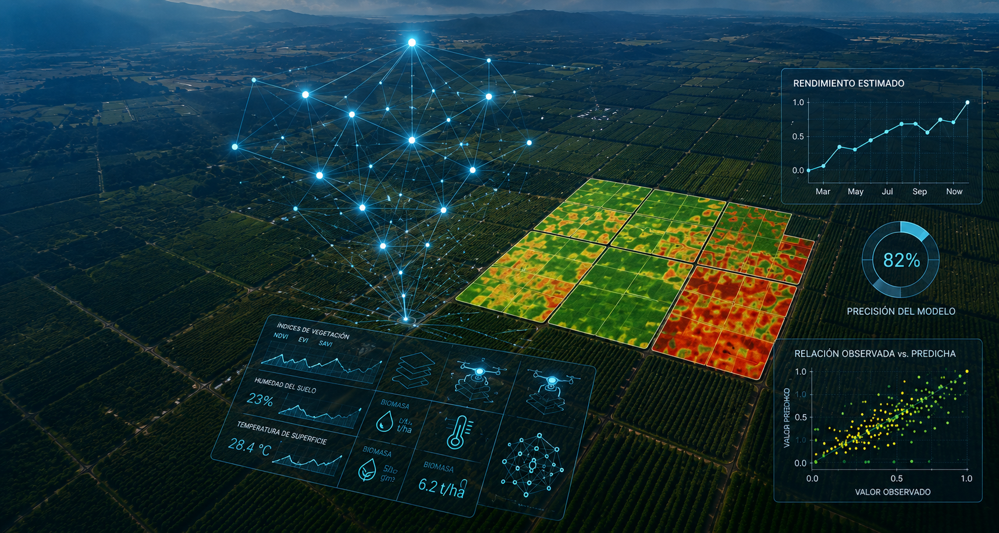
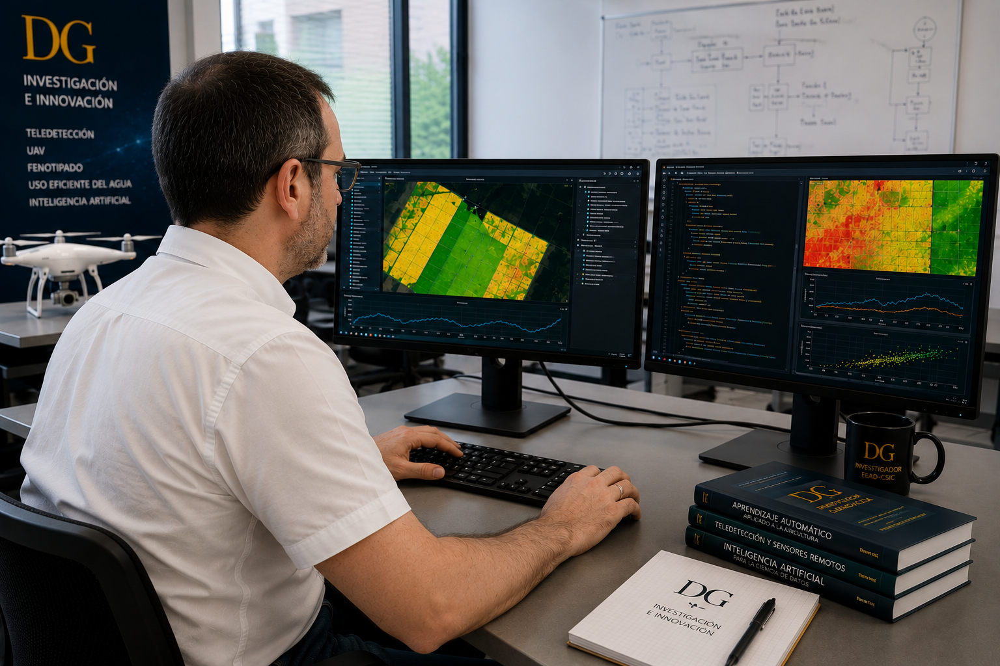
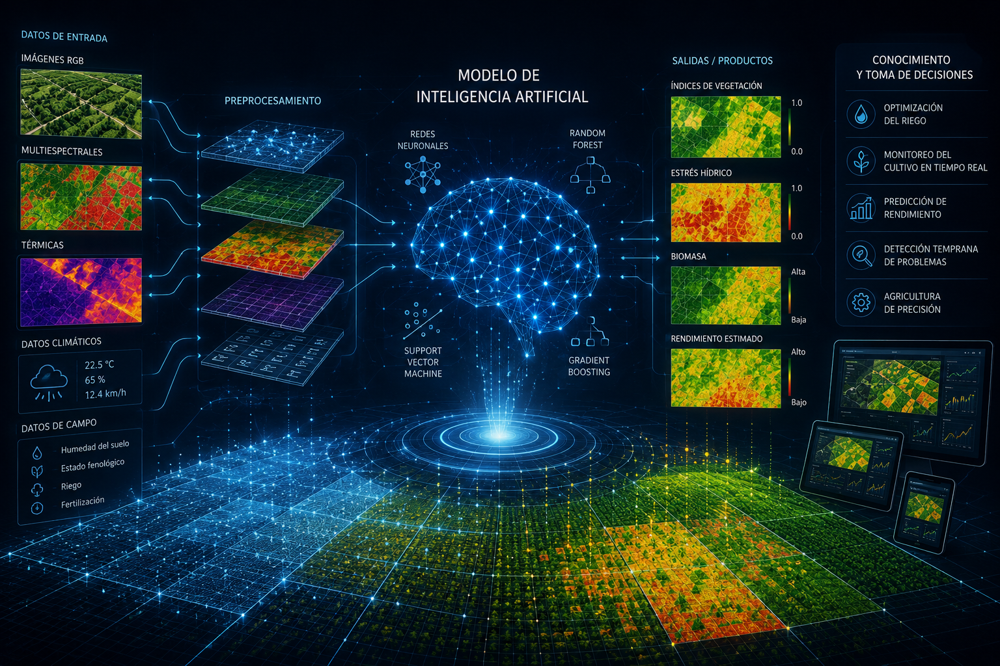
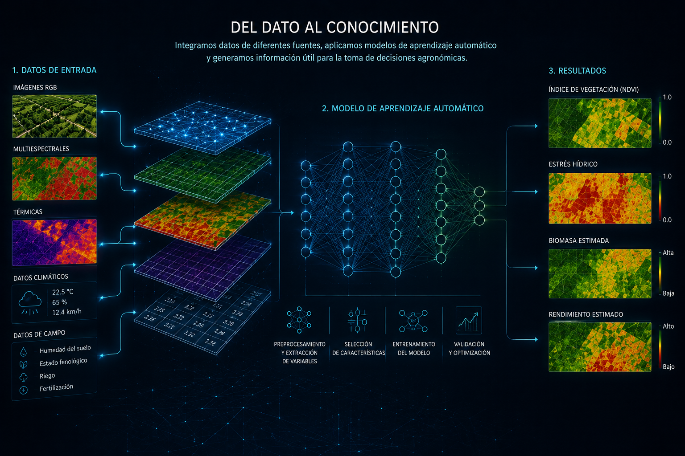
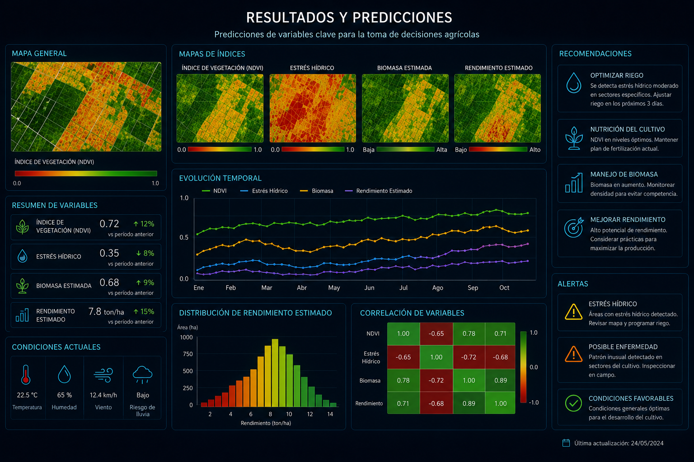

+10
Tipos de datos
Integración de imágenes RGB, multiespectrales, térmicas y datos meteorológicos.

Modelos de aprendizaje automático para interpretar datos procedentes de satélites, drones y sensores terrestres con el fin de estimar variables biofísicas y apoyar una agricultura de precisión basada en evidencia.
Integración de imágenes RGB, multiespectrales, térmicas y datos meteorológicos.
Algoritmos supervisados, ensemble learning, deep learning y regresión.
Estimación de variables biofísicas mediante modelos predictivos.
Datos obtenidos en diferentes cultivos, campañas y ambientes.
La inteligencia artificial permite extraer conocimiento a partir de grandes volúmenes de datos generados por satélites, drones, sensores terrestres y campañas experimentales. Mediante algoritmos de aprendizaje automático es posible identificar patrones complejos imposibles de detectar mediante técnicas convencionales.
Esta línea de investigación integra información espectral, térmica y estructural para desarrollar modelos predictivos capaces de estimar variables biofísicas del cultivo con elevada precisión, facilitando la toma de decisiones en agricultura de precisión.

Desarrollo y validación de modelos predictivos mediante integración de imágenes multiespectrales, datos térmicos y algoritmos de aprendizaje automático.
Los modelos de aprendizaje automático integran información procedente de múltiples sensores para convertir millones de observaciones en indicadores agronómicos de alto valor. Este proceso permite estimar parámetros como biomasa, vigor, estado hídrico o rendimiento potencial con gran precisión.
La combinación de técnicas de inteligencia artificial con teledetección constituye una herramienta clave para automatizar el análisis de cultivos y optimizar la gestión agrícola en diferentes escenarios.

Identificación automática de cultivos, cubiertas vegetales y estados fenológicos mediante modelos supervisados.
Estimación de biomasa, rendimiento, contenido de clorofila y otras variables biofísicas.
Delimitación automática de parcelas, plantas y zonas homogéneas a partir de imágenes.
Obtención de indicadores agronómicos mediante la integración de información espectral y térmica.
Identificación temprana de estrés hídrico, anomalías fisiológicas y posibles enfermedades.
Fusión de múltiples fuentes de datos para comprender el comportamiento del cultivo.
Integración de imágenes RGB, multiespectrales, térmicas y datos de campo para generar modelos predictivos capaces de estimar variables agronómicas de interés.

Los modelos permiten generar mapas temáticos, indicadores biofísicos y recomendaciones para optimizar la gestión agrícola.

Evaluación del estado hídrico de los cultivos y optimización del riego mediante modelos predictivos basados en imágenes térmicas y multiespectrales.
Estimación automática de biomasa, cobertura vegetal, altura del cultivo y otros parámetros relevantes para programas de mejora genética.
Procesamiento inteligente de imágenes procedentes de satélites y UAV para caracterizar el estado de los cultivos.
Generación de mapas de prescripción y herramientas de ayuda para una agricultura más eficiente, sostenible y basada en datos.